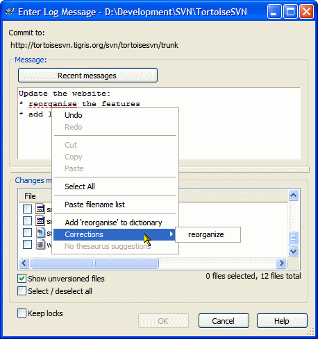
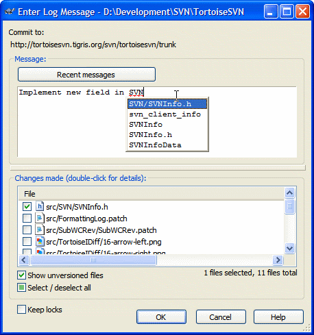
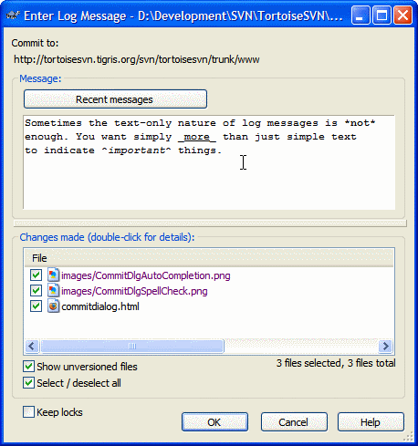

If a spell checker dictionary is installed, TortoiseSVN will use it to check your log messages while you type:
You can download the spell checker for different languages here.
While you are typing your log message for the commit, TortoiseSVN shows you choices for keywords or paths you might want to enter:
The paths are taken from the list of modified files. The keywords are extracted from the same files.
Log messages in Subversion are pure, simple text. But sometimes you want to emphasize some words in your log messages. This is where the text formatting feature of TortoiseSVN helps out:
Text in between '*' chars is made bold, in between '_' chars underlined and in between '^' chars made italic. Of course, the same formatting happens later in the log dialog.